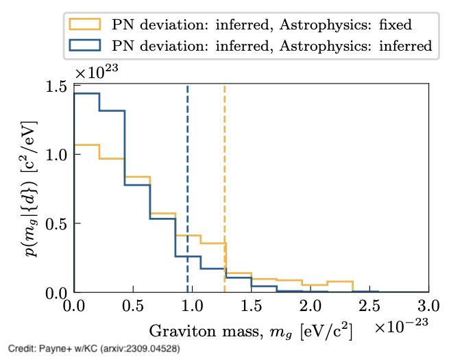
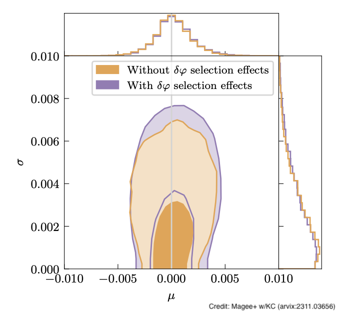
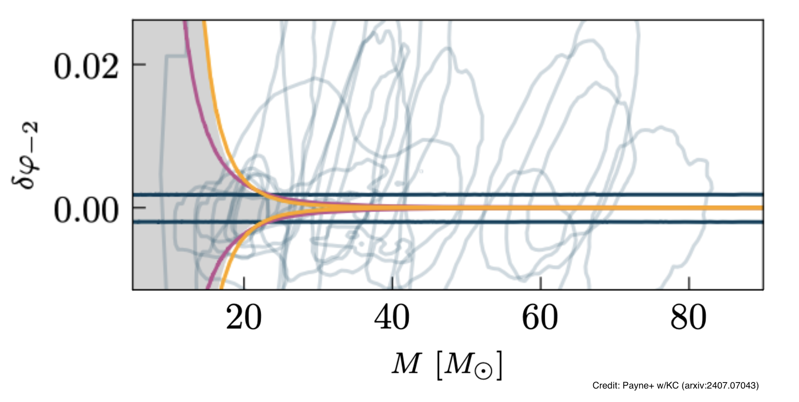

Testing General Relativity
Gravitational-wave detections from merging black holes and neutron stars give us a powerful way to test Einstein's General Relativity in extreme conditions where gravity is incredibly strong and rapidly changing. However, testing the theory is challenging because we do not have many well-developed alternative theories of gravity to compare against - General Relativity has been studied far more thoroughly than its competitors. We focus on checking the basic properties that gravitational waves should have according to Einstein's theory, for example on how these waves are polarized as they travel through space.
We are building a comprehensive statistical method to analyze data from the hundreds of gravitational-wave detections we now have to look for any signs that General Relativity might be wrong. Instead of making assumptions about what deviations from Einstein's theory should look like, our approach studies the overall patterns of potential violations across the entire population of observed events. Former graduate student Ethan Payne at Caltech improved this framework by also accounting for the variety in black hole masses and spins we observe, making our tests more reliable by reducing dependence on uncertain astrophysical models. This enhanced analysis produced the most stringent limit yet on whether gravitons (the hypothetical particles that carry gravitational force) have any mass, using gravitational-wave data.
Former Caltech staff scientist Ryan Magee led a study investigating whether our gravitational-wave searches might be biased in favor of Einstein's theory. The concern is that since we use General Relativity's predictions to build our detection algorithms, we might be systematically missing signals from events that do not behave according to Einstein's equations - essentially creating a blind spot for alternative theories. However, Magee's analysis showed that this bias problem is actually quite small for the types of tests we typically perform on gravitational-wave signals. The constraints we have already obtained from 70 detected black hole mergers are strong enough that any potential missed detections do not significantly weaken our conclusions about whether General Relativity is correct.
Even though we try to test General Relativity without assuming too much about what the correct theory should be, we can still use some basic principles that should hold for any reasonable theory of gravity. One surprising example is a counterintuitive property of black holes: larger black holes actually create "gentler" gravitational environments than smaller ones. This happens because the curvature of spacetime around a black hole decreases as the black hole gets more massive - so while a massive black hole has stronger overall gravity, the rate at which gravity changes near its surface is actually less extreme. Payne used this universal relationship not only to improve our existing tests of Einstein's theory, but also to directly measure from gravitational-wave data how curvature scales with mass in whatever the true theory of gravity turns out to be.